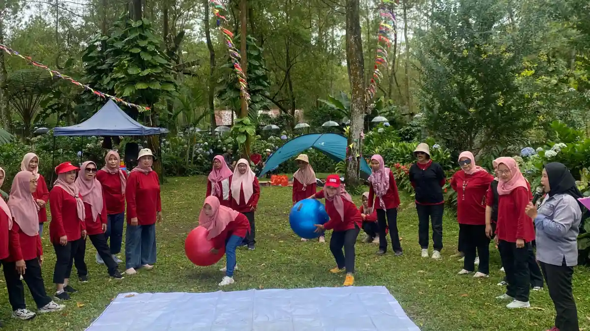

Outbound tanpa permainan fisik adalah konsep team building outdoor dengan intensitas ringan yang tidak menuntut kekuatan atau ketangkasan fisik berlebihan, sehingga cocok diikuti peserta dari berbagai usia dan kondisi kebugaran.
Ringkasan Inti
- Konsep ini semakin diminati perusahaan yang ingin agenda tetap meaningful tanpa risiko cedera atau kelelahan berlebihan.
- Cocok untuk peserta lintas usia, termasuk yang jarang berolahraga atau memiliki keterbatasan fisik.
- Ideal untuk format family gathering yang melibatkan anak-anak dan orang tua.
- Menghindarkan suasana kompetisi kasar yang berisiko menimbulkan insiden.
- Tetap efektif membangun bonding lewat interaksi yang cair dan tidak dipaksakan.
- Bisa dikombinasikan dengan sesi sharing untuk memperkuat kedekatan emosional tim.
1. Apa Itu Konsep Outbound Tanpa Permainan Fisik?
Konsep outbound tanpa permainan fisik adalah pendekatan team building yang menitikberatkan pada interaksi santai, ketenangan, dan kebersamaan, alih-alih tantangan fisik seperti flying fox atau halang rintang berat.
Banyak perusahaan kini memilih aktivitas berbasis alam dengan intensitas ringan namun tetap mampu me-recharge energi peserta setelah rutinitas kerja yang padat.
2. Kenapa Konsep Ini Cocok untuk Semua Kalangan Karyawan?
Konsep ini cocok untuk semua kalangan karyawan karena memastikan tidak ada peserta yang merasa tertinggal, baik yang bertipe introvert maupun ekstrovert, maupun yang memiliki keterbatasan kondisi fisik.
Aktivitas berintensitas ringan memberi ruang partisipasi yang setara tanpa tekanan untuk tampil "kuat" atau "cepat" seperti pada permainan outbound konvensional.
3. Kenapa Format Ini Ideal untuk Family Gathering?
Format ini ideal untuk family gathering karena melibatkan anak-anak dan orang tua tanpa risiko kompetisi kasar atau insiden yang tak diinginkan.
Ketika acara melibatkan lintas generasi, aktivitas yang terlalu menuntut fisik justru berpotensi membuat sebagian peserta merasa tidak nyaman atau bahkan cedera, sehingga kegiatan santai menjadi pilihan yang lebih aman dan inklusif.

4. Apa Saja Ide Kegiatan Outbound Santai yang Bisa Dicoba?
Ide kegiatan outbound santai yang bisa dicoba meliputi lima aktivitas berikut, yang seluruhnya bisa dilakukan tanpa perlengkapan rumit maupun tenaga fisik besar.
| Aktivitas | Deskripsi Singkat | Cocok Untuk |
|---|---|---|
| Nature Walk & Mini Photo Challenge | Jalan santai berkelompok sambil mencari objek alam untuk foto kreatif | Semua usia |
| Picnic & Sharing Circle | Duduk santai menikmati camilan sambil berbagi cerita positif | Tim yang ingin bonding lebih personal |
| Mindful Gardening | Merawat tanaman kecil atau menghias terrarium | Peserta yang butuh relaksasi |
| Nature Art Challenge | Berkreasi membuat seni dari daun, batu, atau ranting | Tim kreatif |
| Estafet Balon Duduk & Tebak Lagu Instrumental | Permainan aman tanpa perlu berlari-lari | Family gathering |
5. Bagaimana Nature Walk Bisa Meningkatkan Kebersamaan Tim?
Nature walk bisa meningkatkan kebersamaan tim karena peserta berjalan bersama dalam tempo santai sambil mengobrol ringan, tanpa tekanan target waktu seperti pada permainan kompetitif.
Menambahkan mini photo challenge, misalnya mencari objek alam tertentu untuk difoto bersama, membuat aktivitas ini terasa lebih hidup tanpa mengubah intensitasnya menjadi berat.
6. Kenapa Mindful Gardening Efektif untuk Relaksasi?
Mindful gardening efektif untuk relaksasi karena aktivitas merawat tanaman menuntut fokus pada gerakan tangan yang pelan dan repetitif, sehingga membantu menurunkan tingkat stres peserta.
Sesi ini juga memberi hasil nyata berupa tanaman atau terrarium yang bisa dibawa pulang, menjadikannya kenang-kenangan sekaligus simbol dari kegiatan bersama.

7. Apakah Outbound Tanpa Fisik Tetap Efektif untuk Bonding Tim?
Outbound tanpa fisik tetap efektif untuk bonding tim karena kedekatan emosional lebih banyak terbangun lewat percakapan dan momen berbagi, bukan semata dari tantangan fisik bersama.
Sesi seperti picnic & sharing circle justru memberi ruang bagi peserta untuk saling mengenal lebih dalam dibandingkan permainan cepat yang minim interaksi verbal. Kegiatan santai di luar ruangan ini memastikan bonding terjalin secara cair, natural, dan aman bagi seluruh rentang usia peserta.
8. Pertanyaan yang Sering Diajukan
Abiyyu
Seorang penulis artikel yang sudah berpengalaman di dalam dunia wisata outbound Batu Malang.